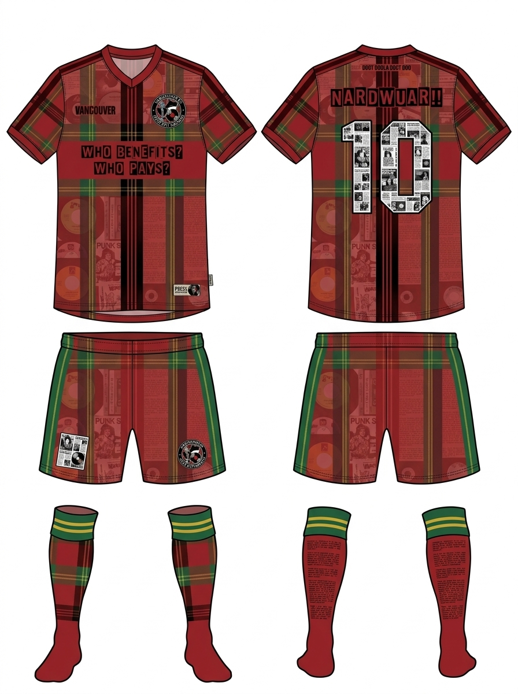
The brief at Vancouver Made was one sentence. What if Vancouver had its own World Cup kit.
Everyone else made a souvenir. We made the receipt.
The project is called MADE ON, and it walked out of the BCIT Tech Collider on June 20 with double silver: second in the technical hackathon and second in the fashion design challenge. The whole thing is live, and you can walk through every kit at vancouver-made.vercel.app. This is what we built, and why I built it pointed the other way.
MADE ON is a protest collection for the 2026 World Cup. Not kits that throw the party. Kits that name what the party is built on, with every factual claim cited on the hem so you can check my math.
Made on stolen ground. Made on Hogan's Alley. Made on 729 million dollars of public money. I took the tournament's own visual language, the kits, the crests, the sponsor bars, the kit-maker spec type, and I kept the surface and flipped the payload. From ten feet it reads like official merch. Up close it is the coloniser's own paperwork. The receipt. The redaction. The banknote.
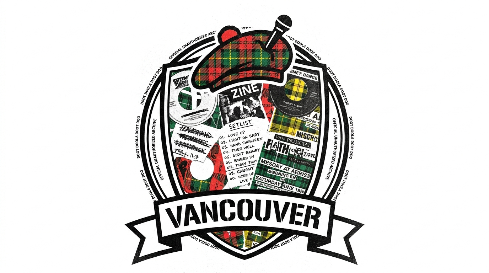
Each kit is its own immersive world, with the concept, the kit up close, the process, and the receipts behind it.
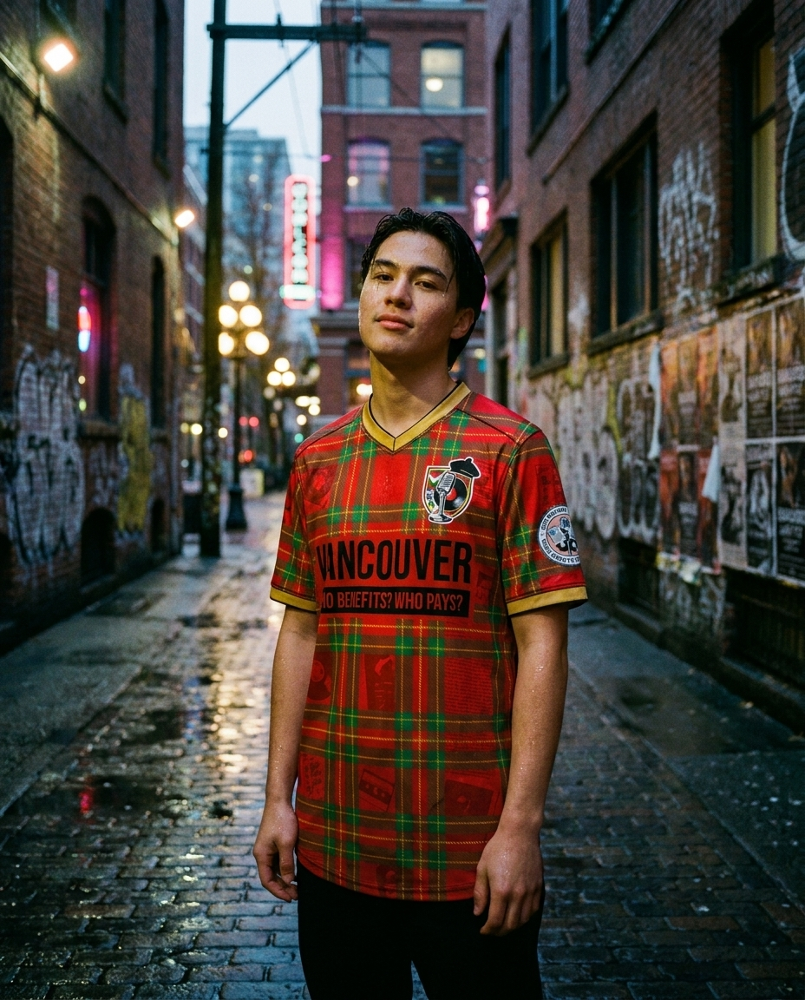
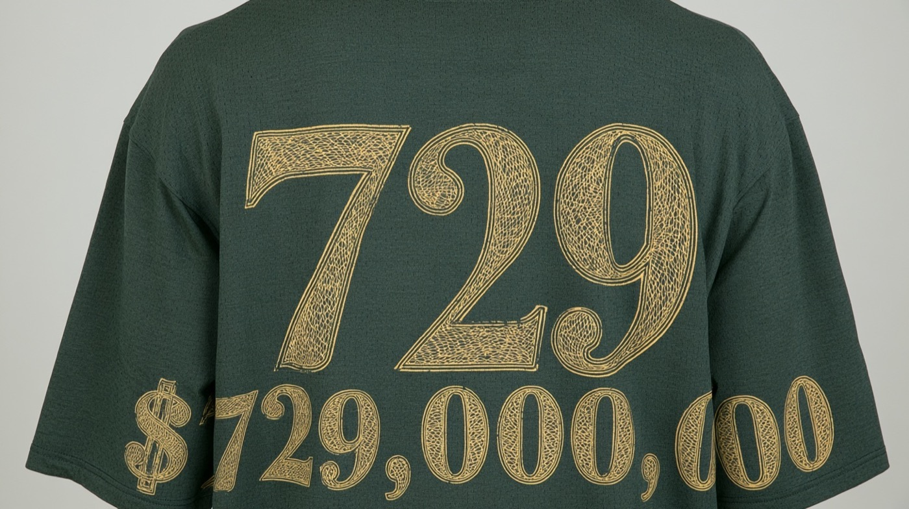
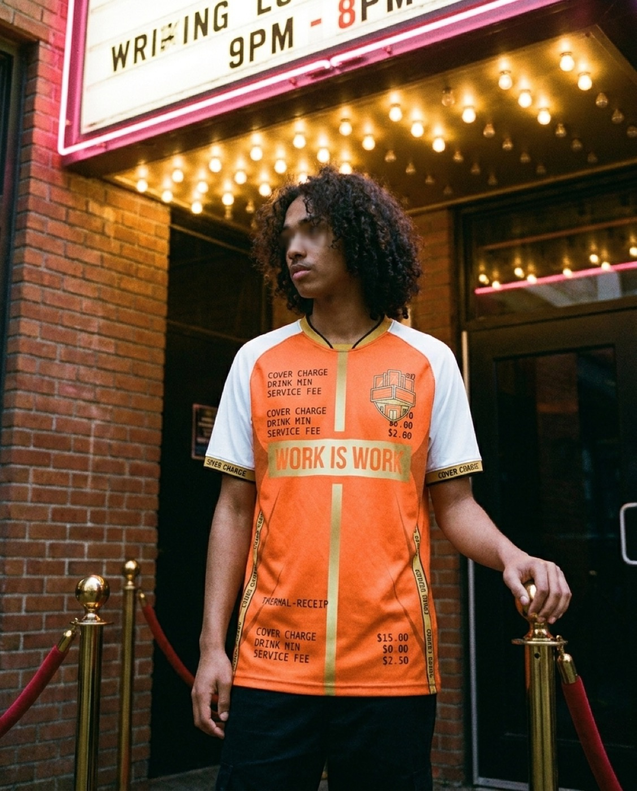
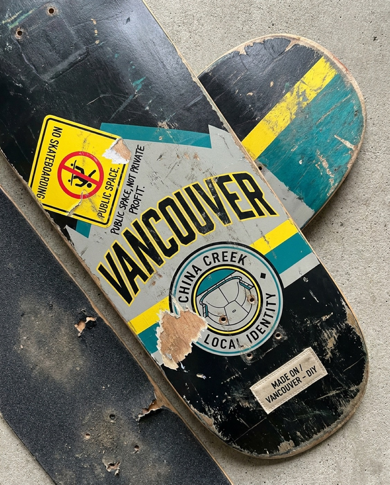
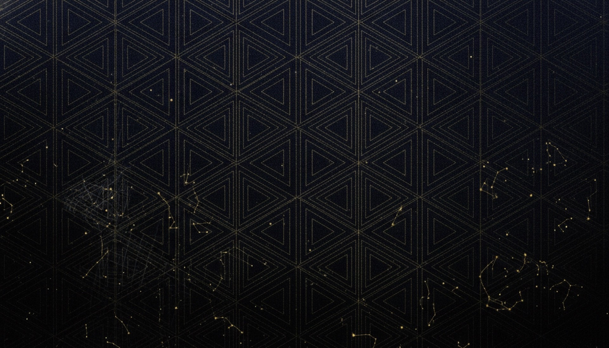
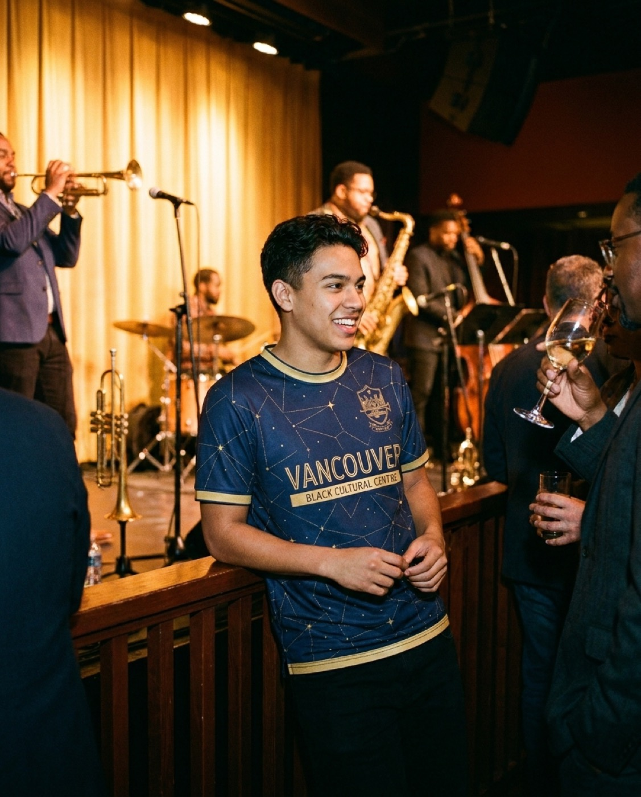
The build behind it is a thing I call the Receipts Engine. Three words: mimic, invert, cite.
You take one civic number, say the public cost of the tournament, and render it three ways. As a detail on the hem. As a poster. As an editorial line. One fact, three surfaces, all of them pointing back at the source. The engine is what turns a claim into a garment without dropping the citation on the floor. There is also a generative wall of every frame we made, a making-of for each kit, and two companion surfaces, feefa.ai and the World Cup fashion cake, for when you want the joke and the knife in the same bite.
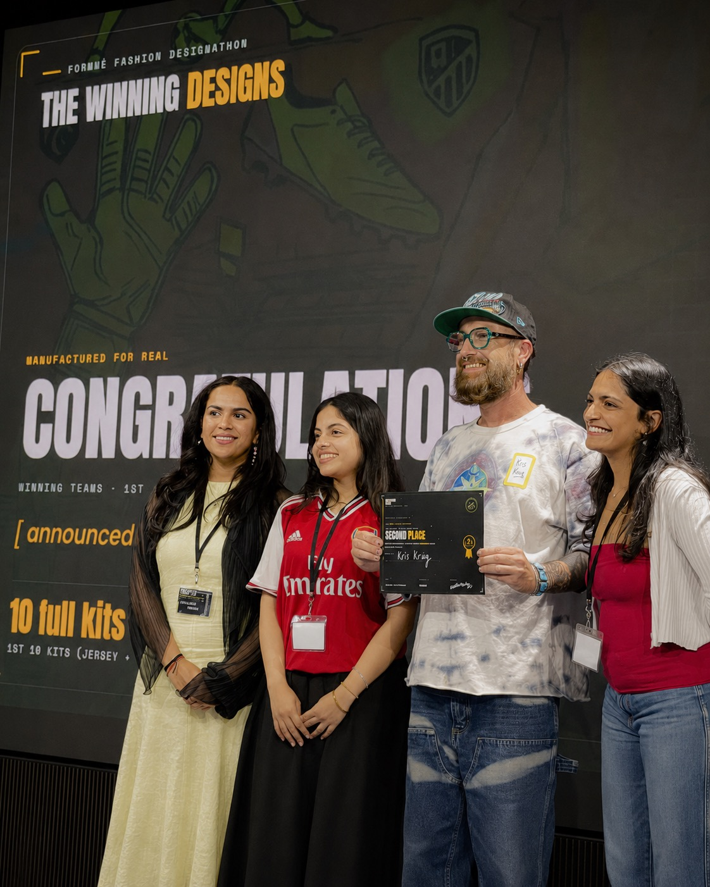
Second in both tracks, out of a strong field in each. The dev track, the Devin Open Hackathon, gave it second of about a hundred and a 300 dollar handshake for the Receipts Engine and the three live counter-spectacle surfaces. The design track, the Formmé Fashion Design challenge, gave it second of about fifty for the Nardwuar kit. That prize is not a trophy on a shelf. It is production. Formmé is sewing five of these jerseys into the world.
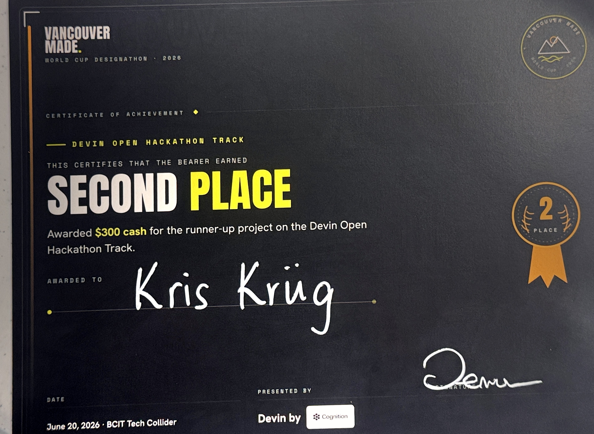
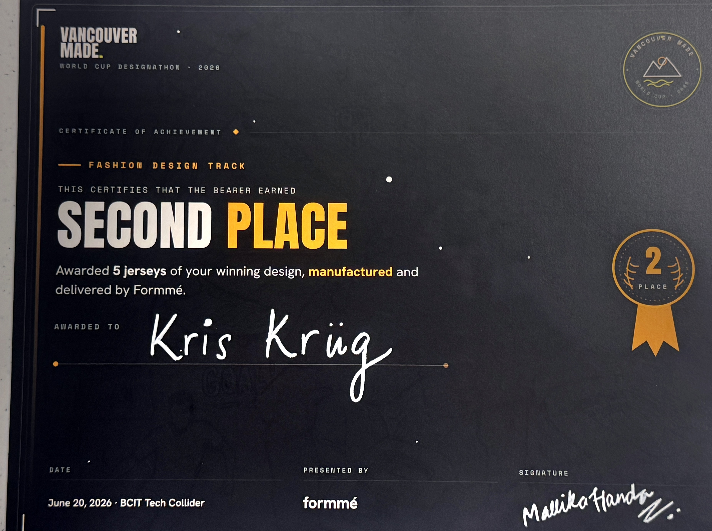
I spent the build fixing what broke and surviving a site-wide redesign mid-stream, and it still placed twice. The full record lives on the awards page.
I am a settler artist working on the unceded territories of the Musqueam, Squamish, and Tsleil-Waututh Nations. When somebody asks me to make a celebration jersey for a tournament that lands on stolen ground, the honest answer is no.
No is not a project. So I made the refusal into the work.
No borrowed sacred imagery. No turning a culture into a costume. The only thing I let myself dress up in was the coloniser's own paperwork, because that is the part I am actually allowed to wear. AI was the brush, not the artist. The subject is greed, displacement, and who pays the public bill. They asked for the Vancouver story. We finished the sentence.
The whole collection is live: five kit worlds, the receipts, the process. vancouver-made.vercel.app. Start with Hogan's Alley if you only have time for one. Whose cup is it anyway.
If you want the rest of what I am making with creative AI, where the human stays on the wheel:
Thanks to Devin by Cognition and Formmé for the tracks, BCIT Tech Collider for the room, and the Young Guns Studio and Students@AI crews for putting it on.